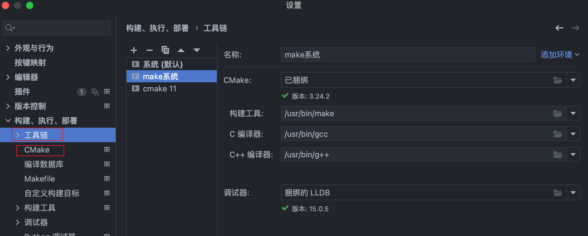

2023-02-20
使用CLion遇到的坑
修改于: 2023-02-20c(++)的项目根据不同的编译方式, 可以分为几类项目:
- cmake
- makefile
- compilation database
- gradle
| 官网指引:: | https://www.jetbrains.com/help/clion/clion-quick-start-guide.html#open-create-prj https://www.jetbrains.com/zh-cn/clion/features/start-your-project.html |
|---|
暂且只说cmake项目
配置
对于CLion而言, 需要配置的主要有以下几个地方:
- 工具链 在此处指定make, gcc, g++ 的路径
- cmake 指定本cmake项目使用哪一个配置的工具链
- CMakeLists.txt CMakeLists.txt位于项目根目录下, 里面写明了如何构建环境. 比如环境变量, 如何运行都依赖此文件.

工具链和cmake
注解
若无cmake需要自行下载安装, 正常直接执行:
xcode-select --install
安装好绑定的工具即可(不过我用的时候, 这样生成的默认构建工具ninja使用的时候有些问题).
若需要自行安装cmake官网版本, 可参考 cmake
打开项目
对于cmake项目而言, 打开项目时, 项目根目录下一定要有 CMakeLists.txt 文件.
CLion会根据, 且只会根据此文件去编译项目, 类似在项目根目录下执行以下指令:
mkdir cmake-build-debug && cd cmake-build-debug && cmake ../
然后会生成一个可执行的配置(就是右上角那个绿色三角形了)
找不到项目头文件
打开 CMakeLists.txt , 在其中加入头文件搜索路径, 多个路径直接换行即可:
include_directories( path1 path2 ... )
将CLion项目转换为VS工程
根目录下执行:
mkdir build cd build cmake -G "Visual Studio 16 2019" -A x64 ..
| 参考:: | https://www.coder.work/article/7296599 |
|---|---|
| cmake详解:: | https://www.cnblogs.com/kuliuheng/p/9431275.html |
注解
cmake 与 make 相比能够更好的实现跨平台的兼容.
cmake: 根据 CMakeLists.txt 生成适配不同平台的 makefile, 再根据此makefile去执行编译 makefile: 直接根据makefile内容编译生成